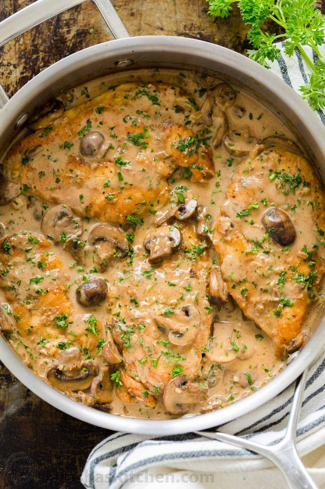

Chicken Marsala

Description
Chicken Marsala is an Italian-style recipe for tender pan-fried chicken breasts
in a sweet Marsala wine and mushroom sauce. It's super quick and easy to make for a
weeknight dinner AND sophisticated enough for company.
Ingredients
- All Purpose Flour-1/4 Cup
- Kosher Salt-1/2 Teaspoon
- Ground Black Pepper-1/4 Teaspoon
- Dried Oregano-1/2 Teaspoon
- Boneless Skinless Chicken Breast Halves- 4 , Medium Size Punded 1/4 Inch Thick
- Butter-4 Tablespoons
- Extra Virgin Olive Oil-4 Tablespoons
- Sliced Mushrooms-1 Cup
- Marsala Cooking Wine-1/2 Cup
- Cooking Sherry-1/4 Cup
Steps
- Gather all ingredients.
- In a shallow dish or bowl,
mix together the flour, salt, pepper,
and oregano.
- Coat the chicken pieces in the flour mixture.
- In a large skillet, melt butter in olive oil over medium heat.
Place chicken in the pan, and lightly brown.
- Turn over chicken pieces, and add mushrooms. Pour in wine and sherry.
- Cover skillet; simmer chicken 10 minutes, turning once, until no longer pink and juices run clear
- Serve hot and enjoy!